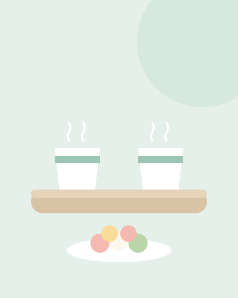

- 상견례 준비
- 가이드
- 상견례 예절과 피해야 할 말
상견례 예절과 피해야 할 말
상견례에서 어른들이 눈여겨보는 건 말솜씨보다 서로를 대하는 태도예요. 호칭과 인사, 식사 예절 몇 가지만 알고 가면 실수할 일이 크게 줄어요. 피하면 좋은 말은 대신 쓸 수 있는 말과 함께 정리했어요.

호칭: 누구를 어떻게 부를까
| 누가 | 누구를 | 이렇게 불러요 |
|---|---|---|
| 예비부부 | 상대 부모님 | 아버님, 어머님 |
| 예비부부 | 자기 부모님 (상대 앞에서) | 저희 아버지, 저희 어머니 |
| 부모님 | 상대 아버지 | 사돈어른, 또는 ○○ 아버님 |
| 부모님 | 상대 어머니 | 사부인, 또는 ○○ 어머님 |
| 부모님 | 상대 예비 사위·며느리 | ○○ 씨, 또는 이름 |
- ‘사돈’은 아직 이르다고 여기는 분도 있어요. 결혼 전이라 "철수 아버님", "은혜 어머님"처럼 자녀 이름을 붙여 부르는 경우가 많아요. 부모님께 미리 알려 드리면 당일에 망설이지 않으세요.
- 자기 부모님은 상대 앞에서도 높여 말해도 돼요. "저희 아버지께서는 등산을 좋아하세요"처럼 말하면 자연스러워요.
- 예비 배우자는 이름에 ‘씨’를 붙여요. 평소처럼 "자기야", 별명으로 부르지 않도록 둘이 미리 말을 맞춰 두세요.
인사와 소개
- 먼저 도착해서 맞이하기. 예비부부는 20~30분 일찍 도착해요. 어른이 들어오시면 자리에서 일어나 인사해요.
- 악수보다 목례. 어른이 먼저 손을 내미시면 두 손으로 받아요.
- 소개는 각자 자기 가족을. 예비신랑이 자기 부모님을, 예비신부가 자기 부모님을 상대 집안에 소개해요.
- 앉는 자리는 미리 정해 두기. 출입문에서 먼 안쪽이 윗자리예요. 정해 두지 않으면 서로 양보하느라 시간이 걸려요.
처음 뵙겠습니다. 은혜 씨와 만나고 있는 김철수입니다. 먼 길 와 주셔서 감사합니다.

식사와 술자리 예절
- 수저는 어른이 드신 뒤에. 양가 어른이 모두 드시기 시작하면 따라 들어요.
- 음식은 상대 어른께 먼저 권하기. 새 요리가 나오면 예비부부가 상대 부모님 쪽으로 먼저 놓아 드려요.
- 술은 두 손으로 받고 따르기. 어른 앞에서 마실 때는 고개를 살짝 돌려 마셔요. 예비부부는 두세 잔 안에서 멈추세요.
- 술을 못 하면 미리 말하기. 잔은 받되 입만 대고, 음료로 바꿔 달라고 해도 괜찮아요.
- 휴대폰은 무음으로, 가방에. 식사 중 테이블 위에 올려 두지 않아요. 급한 연락은 양해를 구하고 밖에서 받아요.
- 사진은 식사가 끝난 뒤에. 기념사진을 찍고 싶다면 마무리할 때 양가에 여쭤 보고 찍어요.
제가 술을 잘 못 해서요. 첫 잔만 받고 나머지는 음료로 받겠습니다.
피해야 할 말과 대신 쓸 말
악의 없이 한 말도 상대 집안에서는 다르게 들릴 수 있어요. 특히 부모님들이 무심코 꺼내기 쉬운 말이 많으니, 예비부부가 미리 각자 부모님께 말씀드려 두세요.
집안끼리 비교하는 말
저희 집은 원래 제사를 크게 지내요. 그쪽도 그렇게 하셔야 할 거예요.
집집마다 하는 방식이 다르니까, 아이들이 편한 쪽으로 같이 정해 보면 좋겠어요.
예단 · 예물 · 집 마련 금액
상견례 자리에서 금액 이야기는 꺼내지 않는 게 안전해요. 상대가 먼저 꺼냈다면 그 집안 자녀가 받아서 다음으로 넘겨요.
그 부분은 저희 둘이 먼저 정리해서 따로 말씀드리겠습니다.
학교, 직장, 연봉 캐묻기
"어떤 일을 하세요?" 정도는 괜찮지만, 회사 규모나 연봉, 학교를 이어서 묻는 건 평가받는 느낌을 줘요.
그 회사면 연봉은 어느 정도 돼요?
일하면서 제일 재미있는 건 어떤 거예요?
자기 자녀를 지나치게 낮추는 말
겸손하게 하는 말이지만, 상대 집안은 "아니에요"라고 받아야 해서 대답이 곤란해요.
저희 애가 부족한 게 많아서 걱정이에요.
저희 애가 요즘 ○○ 씨 이야기를 할 때 제일 많이 웃어요.
외모, 체중, 나이에 대한 농담
결혼식 전에 살 좀 빼야겠다.
자녀 계획, 합가, 사는 곳을 단정하는 말
애는 결혼하고 바로 가져야지. 집은 우리 근처로 얻어.
사는 곳이나 계획은 둘이 정하면 우리는 응원해 주자고요.
정치, 종교, 지난 연애
생각이 갈리기 쉬운 주제는 한 번 시작되면 끊기 어려워요. 예비부부의 지난 연애나 실수담은 농담으로도 꺼내지 않아요.

실수했을 때 수습하는 말
긴장한 자리라 실수는 생길 수 있어요. 바로 짧게 사과하고 넘어가는 게 가장 깔끔해요.
죄송합니다, 제가 긴장을 많이 했나 봐요. ○○ 어머님.
아이고, 죄송합니다. 옷에는 안 묻으셨어요?
아빠, 그 얘기는 저희가 나중에 따로 말씀드릴게요. 어머님, 이거 드셔 보셨어요? 여기 전복이 유명하대요.
분위기가 굳었다면 화제를 음식이나 두 사람 이야기로 돌리세요. 상견례가 끝난 뒤에는 그 일을 다시 꺼내 따지기보다, 감사 인사를 보낼 때 한 줄로 마음을 전하면 충분해요.
예비부부끼리 미리 정할 것
- 각자 자기 부모님을 맡기: 자기 부모님이 곤란한 말을 하면 자기가 받아서 넘긴다
- 대화가 막히면 꺼낼 질문 서너 개를 나눠 준비한다
- 예식, 예단, 집 이야기는 어디까지 말할지 정한다
- 힘들 때 보낼 신호를 정한다 (예: 물컵을 오른쪽으로 옮기면 화제 바꾸기)
- 서로 부를 호칭을 정한다 (○○ 씨)
당일 시간대별 흐름은 상견례 순서와 진행에서, 옷차림은 상견례 복장에서 확인하세요.